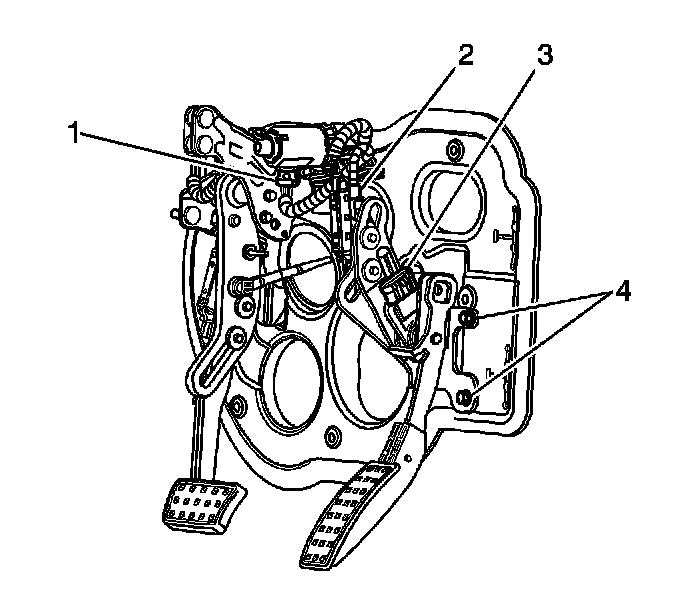

Accelerator Pedal Assembly Replacement (LHD)
Accelerator Pedal Assembly Replacement (LHD)
Removal Procedure

1. Remove the knee bolster bracket. Refer to Driver Knee Bolster Bracket Replacement (Left Hand Drive) (Service and Repair)Driver Knee Bolster Bracket Replacement (Right Hand Drive) (Service and Repair) .
2. Remove the accelerator pedal assembly mounting nuts (4).
3. Remove the pedal assembly from the studs.
4. Disconnect the electrical connector from the electronic throttle control sensor (3).

5. Disconnect the electrical connector from the linear position sensor.
6. Carefully lift the retaining tabs on the end of the accelerator pedal cable (1) using 2 thin-bladed tools.
7. Disconnect the adjustable accelerator pedal cable (1) from the pedal assembly.
8. Remove the accelerator pedal assembly from the vehicle.
Installation Procedure
Important: Ensure that the adjustable accelerator pedal and adjustable brake pedal are synchronized in the full forward, front of vehicle position.
Important: During the synchronization procedure, do not exceed 0.5 N.m (4.43 lb in) of torque while adjusting the pedals with the use of the cable, or the square drive.
1. Synchronize the pedals to the full forward position.
2. Synchronize the brake pedal to the full forward position. Use the instrument panel switch, the Tech II, or manually move the brake pedal as follows:
1. Use an adjustable wrench on the accelerator pedal end of the accelerator pedal cable (1).
2. Slowly rotate the accelerator cable to move the brake pedal to the full forward, front of vehicle position.
3. Remove the wrench from the vehicle.
3. The new accelerator pedal assembly should already be synchronized to the full forward position. If the pedal is not synchronized, proceed as follows before installation:
1. Install a square drive tool into the accelerator pedal where the cable attaches.
2. Carefully rotate the tool to move the adjustable pedal to the full forward position.
3. Remove the square drive tool.
4. Connect the adjustable accelerator pedal cable (1) to the pedal assembly.
5. Ensure that the adjustable accelerator pedal cable retaining feature is locked in place by carefully pulling on the cable.
6. Connect the electrical connector to the linear position sensor.
7. Connect the electrical connector to the electronic throttle control sensor (3).
8. Install the accelerator pedal assembly to the mounting studs.
Notice: Refer to Fastener Notice (Fastener Notice) .
9. Install the accelerator pedal assembly mounting nuts (4).
Tighten the accelerator pedal assembly mounting nuts to 9 N.m (80 lb in).
10. Install the knee bolster bracket. Refer to Driver Knee Bolster Bracket Replacement (Left Hand Drive) (Service and Repair)Driver Knee Bolster Bracket Replacement (Right Hand Drive) (Service and Repair) .
11. Perform the adjustable pedal calibration procedure. Refer to Adjustable Pedal System Calibration (Programming and Relearning) .